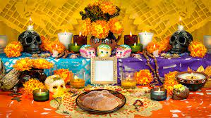

Origen del día de muertos
La celebración de los fieles difuntos en México tiene su origen en la época prehispánica. De acuerdo con los historiadores, los mexicas tenían varios periodos a lo largo del año para celebrar a sus muertos, los más importantes se realizaban al terminar las cosechas, entre los meses de septiembre y noviembre
¿Qué se hace en día de muertos?
Cada año muchas familias colocan ofrendas y altares decorados con flores de cempasúchil, papel picado, calaveritas de azúcar, pan de muerto, mole o algún platillo que le gustaba a sus familiares a quien va dedicada la ofrenda, y al igual que en tiempos prehispánicos, se coloca incienso para aromatizar el lugar. Asimismo, las festividades incluyen adornar las tumbas con flores y muchas veces hacer altares sobre las lápidas, lo que en apocas indígenas tenía un gran significado porque se pensaba que ayudaba a conducir a las ánimas a transitar por un buen camino tras la muerte. La tradición también indica que, para facilitar el retorno de las almas a la tierra, se deben esparcir pétalos de flores de cempasúchil y colocar velas trazando el camino que van a recorrer para que estas almas no se pierdan y lleguen a su destino. En la antigüedad este camino llegaba desde la casa de las familias hasta el panteón donde descansaban sus seres queridos.
Panteones
El 2 de noviembre se realiza la famosa «Alumbrada» en el panteón, donde se rinde homenaje a los muertos. A partir de las 19:00 horas, la gente llega a las tumbas para decorarlas con flores e iluminarlas con veladoras. Este es un hermoso espectáculo de velas que no te puedes perder.
.jpg)
Lista de cosas de una ofrenda
- Veladoras
- Papel de China picado
- Flor de cempasuchil
- La comida favorita de lo difuntos
- Agua
- Sal